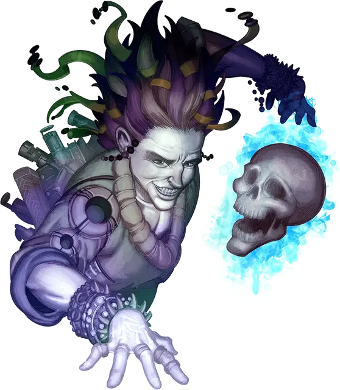

Могхадам
Moghadam
Средний Гуманоид (Человек), нейтрально-злой, именной НИП

Класс Доспеха 14 (кираса)
Хиты 104 (19к8 + 19)
Скорость 30 футов
| мод | спас | ||
|---|---|---|---|
| СИЛ | 10 | +0 | +0 |
| ЛОВ | 12 | +1 | +1 |
| ТЕЛ | 13 | +1 | +5 |
| мод | спас | ||
|---|---|---|---|
| ИНТ | 19 | +4 | +8 |
| МДР | 16 | +3 | +7 |
| ХАР | 16 | +3 | +3 |
Навыки Магия +8, Медицина +7, Проницательность +7
Чувства пассивное Восприятие 13
Языки Общий, Бездны, Дварфийский, Инфернальный, Подземный
Опасность 12 (8400 опыта)
Бонус мастерства +4
Особенности
Специальное снаряжение. Могхадам владеет мечом гибели [ruinblade].
Искусственный разум. Могхадам может проявлять искусственный разум в виде плавающего призрачного изображения украшенного драгоценностями черепа демилича. Могхадам может телепатически общаться с этим разумом, посылать его на расстояние до 300 футов от себя и видеть и слышать через него.
Инфопортация (1/день). Могхадам может телепортироваться в свободное пространство рядом со своим искусственным разумом.
Использование заклинаний. Могадам - заклинатель 18-го уровня. Его базовой характеристикой является Интеллект (Сл спасброска от заклинаний 16, +8 к попаданию атаками заклинаниями). У него подготовлены следующие заклинания изобретателя:
• Заговоры (Неограниченно): пляшущие огоньки [dancing lights], свет [light], сообщение [message], электрошок [shocking grasp]
• 1-й уровень (4 ячейки): понимание языков [comprehend languages], лечение ран [cure wounds], скольжение [grease],
• 2-й уровень (3 ячейки): обнаружение мыслей [detect thoughts], невидимость [invisibility], раскалённый металл [heat metal]
• 3-й уровень (3 ячейки): рассеивание магии [dispel magic], пылающие стрелы [flame arrows], гипнотический узор [hypnotic pattern]
• 4-й уровень (3 ячейки): изготовление [fabricate], изменение формы камня [stone shape], каменная кожа [stoneskin]
• 5-й уровень (1 ячейка): сотворение [creation]
Действия
Меч гибели. Рукопашная атака оружием: +6 к попаданию, досягаемость 5 футов, одна цель. Попадание: 9 (2к6 + 2) рубящего урона.
Мор (1/день). Владея мечом гибели [ruinblade], Могхадам может наложить заклинание усыхание [blight] (Сл 15).
Распад (1/7 дней). Владея мечом гибели [ruinblade], Могхадам может наложить заклинание распад [disintegrate] против любого немагического объекта или создания магической силы.
Информационная перегрузка (перезарядка 5–6). Могхадам перегружает мысли одного существа в пределах 5 футов либо от себя, либо от своего искусственного разума. Цель должна преуспеть в спасброске Интеллекта Сл 16, иначе она получит 22 (4к8 + 4) урона психической энергией и следующий бросок атаки, совершённый по цели до конца следующего хода Могхадама, будет совершаться с преимуществом.